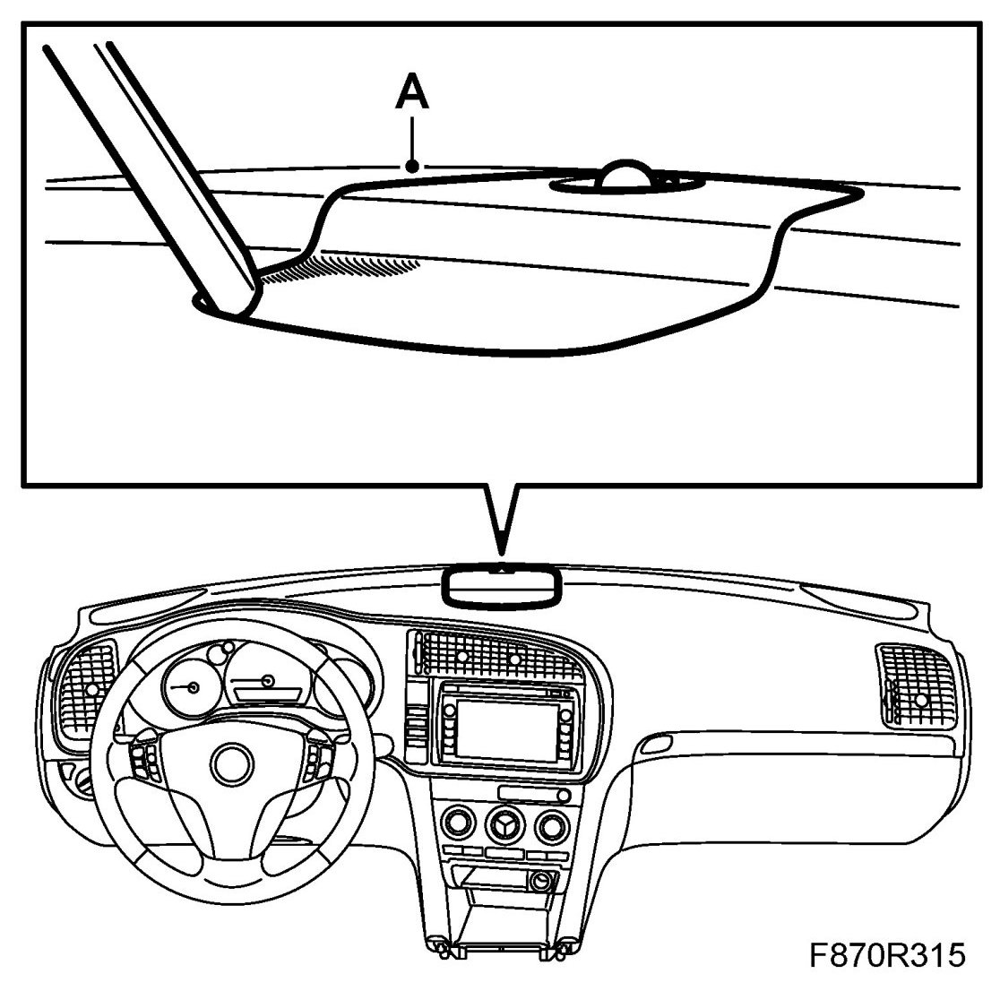
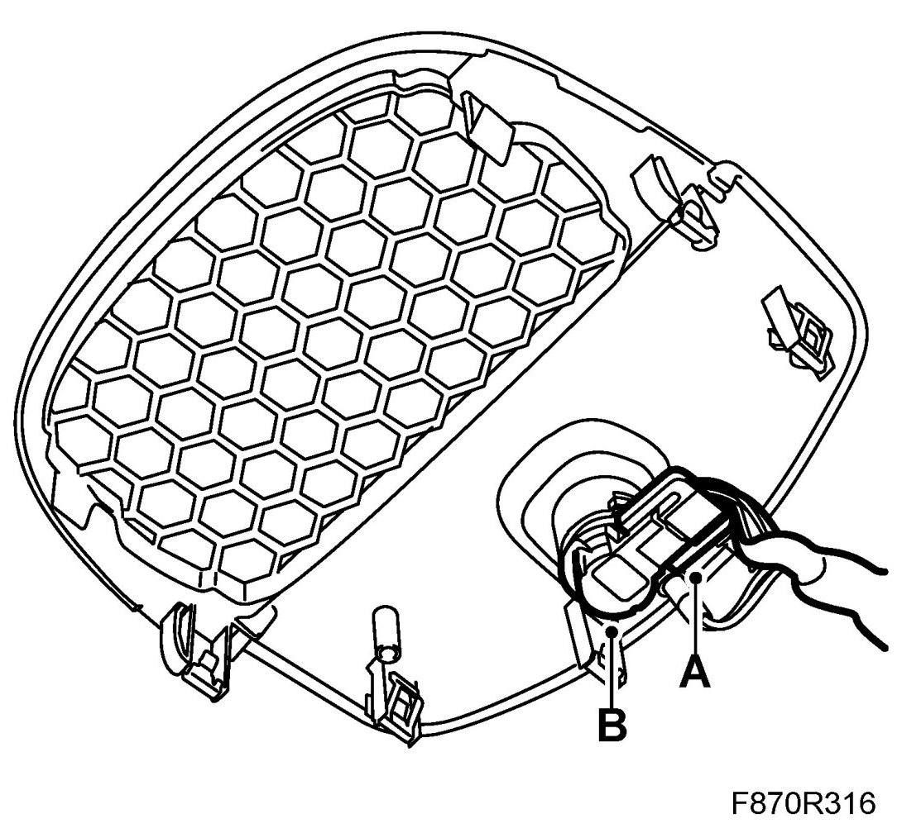
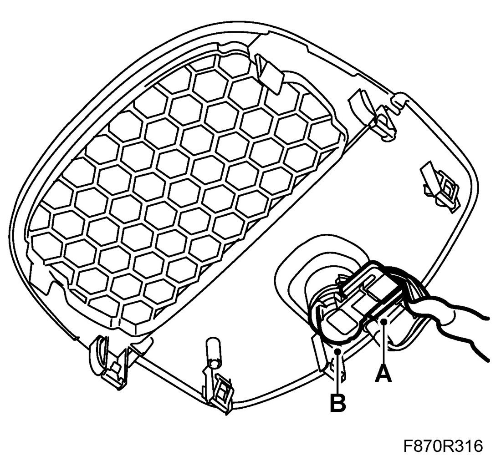
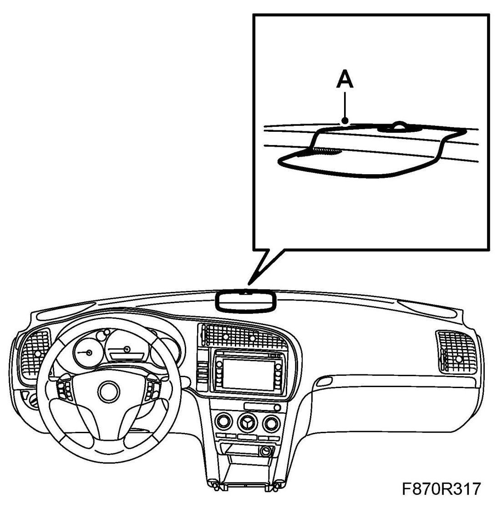

Solar Sensor: Service and Repair
Sun Sensor
To remove
1. Remove the speaker grille (A). Use 82 93 474 Removal tool.

2. Remove the connector (A).

3. Remove the sun sensor (B) from the speaker grille.
To fit
1. Fit the sun sensor (B) to the speaker grille.

2. Fit the connector (A).
3. Fit the speaker grille (A).
